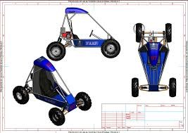
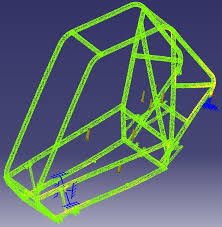
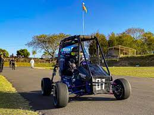
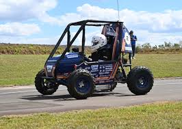

Nossa Trajetória

2019
Fundação da equipe Baja SAE na nossa instituição, com um pequeno grupo de estudantes apaixonados por engenharia automotiva.

2020
Desenvolvimento do primeiro protótipo e participação virtual nas competições devido à pandemia.

2021
Aperfeiçoamento do projeto com foco em inovação e sustentabilidade. Conquista do primeiro reconhecimento regional.

2022
Expansão da equipe e participação em múltiplas competições nacionais. Desenvolvimento de novas tecnologias.

2023
Consolidação como uma das principais equipes do país, com destaque para projetos de eficiência energética.

2024
Atual fase do projeto, focando em inovações tecnológicas e preparação para competições internacionais.